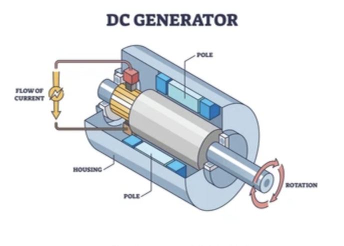
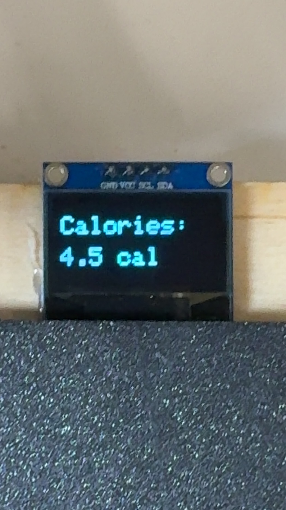
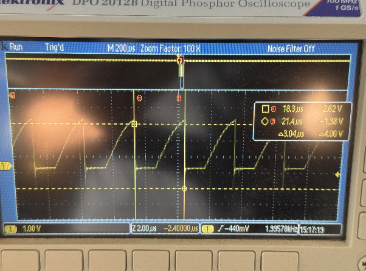

Regenerative Leg Device Project
A wearable device that generates electricity from walking
Project Overview
For this weeks project I decided to challenge the most intimidating aspect of my final prject, so I made a fully functional small scale version of my final project, a wearable charging device powered by walking. And on top of that added new features such as steps taken, calories burned, and how much power you are generating (in volts) displayed on an OLED screen. I also researched ways to solve issues I had with my previous prototype, such as how the power would flow in 2 different polarities depending on the direction the motor spun.
Steps Taken
Researched energy harvesting from using mechanical to electrical conversion via small motors, I found that my previous prototype in "Week 5: 3D design" couldnt keep electricity flowing in one steady polarity and when the rod wpould go back and forth it woul only light 2 LED's at a time due to changes in polarity.
In my last version of the prototype I used a metal rod as the part which is supposed to strap on your calf, however it had fitment issues and I wanted something that fits onto the shaft perfectly.
Installed a BR86D bridge rectifier so voltage output remains positive regardless of spin direction, to do this I I connected the two AC (~) inputs of the BR86D to the two terminals of the DC motor. This allows the bridge rectifier to convert the AC voltage generated by the motor into DC.
Step 5: Voltage Reading
After converting AC to DC using the BR86D bridge rectifier, I connected a 100µF capacitor across the output to smooth the signal. I then used a voltage divider made from two resistors to scale down the voltage to safe levels before connecting it to analog pin A0. This allows the microcontroller to safely measure how much voltage is generated while walking.

I mounted a DRV5055A Hall effect sensor near the "knee joint", with a small magnet on the 3D printed rod so that it passes by the sensor each time I simulate a step. The microcontroller reads analog values from the sensor on pin A1 and detects magnetic pulses to count full steps based on a two pulse system.
I noticed that my newly printed rod was too bulky for my liking and I didnt like how the magnet was indented forward, as I just glued it on. To fix this issue, I made an improved and thinner version of the rod, with a perfect extrusion to fit the magnet flushly.

To provide a rough estimate of calories burned, I researched the calories burned per step for the average person, and programmed the microcontroller to calculate this using a constant multiplier of 0.05 per step. This value is updated in real time on the OLED screen after every detected step.

if (pulseCount == 2) {
stepCount++;
caloriesBurned = stepCount * 0.05;
pulseCount = 0;
}
Three push buttons were wired to digital pins D2, D3, and D6. I implemented debouncing in the code to prevent accidental multiple readings. Each button press allows the user to switch between three modes: Step Count, Calories Burned, and Voltage Reading.

An OLED screen was connected to the microcontroller via the I2C interface. The screen updates depending on inputs, displaying either the step count, estimated calories, or voltage being generated by the motor.

I conducted a final test of my prototype ensuring all sensors and wiring worked as expected. After turning the rod back and forth replicating the movement of walking, I confirmed that the hall sensor was accurately detecting steps, the motor was generating voltage, and the OLED displayed all outputs correctly in real time. I also found that the voltage ranged from 0.69 to about 4.08 at its peak.
Main Features
- Counts steps using a Hall sensor and a magnet
- Estimates calories burned (based on steps)
- Displays generated voltage from the motor
- OLED screen with 3 user-selectable display modes
Hardware Used
- OLED display
- DRV5055A Hall effect sensor
- DC motor (generator)
- BR86D bridge rectifier
- 3 push buttons
- Microcontroller (XIAO ESP32C3)
- Resistors, wires, and a small breadboard
Code Summary
This Arduino code reads signals from a Hall sensor to detect magnetic pulses caused by a magnet passing by. I count two pulses as one step and then estimate calories burned by multiplying steps by 0.05. The code also reads the motor voltage using an analog pin and converts the raw value to volts. Using three buttons, the user can switch between showing steps, calories, or voltage on the OLED screen. To avoid button noise, I added a debounce delay so the mode only changes when the button press is stable. The display updates by clearing and showing the current value without extra text labels.
#include Adafruit_GFX.h
#include Adafruit_SSD1306.h
#define SCREEN_WIDTH 128
#define SCREEN_HEIGHT 64
#define OLED_RESET -1
Adafruit_SSD1306 display(SCREEN_WIDTH, SCREEN_HEIGHT, &Wire, OLED_RESET);
const int hallPin = A1;
const int motorVoltagePin = A0;
const int buttonStepPin = D2;
const int buttonCalPin = D3;
const int buttonPowerPin = D6;
const int rawThreshold = 2500;
int pulseCount = 0;
int stepCount = 0;
float caloriesBurned = 0;
bool magnetDetected = false;
int mode = 0;
unsigned long lastButtonTime = 0;
const unsigned long debounceDelay = 150;
void setup() {
Serial.begin(9600);
pinMode(buttonStepPin, INPUT_PULLUP);
pinMode(buttonCalPin, INPUT_PULLUP);
pinMode(buttonPowerPin, INPUT_PULLUP);
if (!display.begin(SSD1306_SWITCHCAPVCC, 0x3C)) {
Serial.println(F("OLED failed"));
while (true);
}
display.clearDisplay();
display.display();
}
void loop() {
int rawValue = analogRead(hallPin);
if (!magnetDetected && rawValue < rawThreshold) {
magnetDetected = true;
pulseCount++;
if (pulseCount == 2) {
stepCount++;
caloriesBurned = stepCount * 0.05;
pulseCount = 0;
}
}
if (magnetDetected && rawValue > rawThreshold + 100) {
magnetDetected = false;
}
unsigned long now = millis();
if (now - lastButtonTime > debounceDelay) {
if (digitalRead(buttonStepPin) == LOW) {
mode = 0;
lastButtonTime = now;
} else if (digitalRead(buttonCalPin) == LOW) {
mode = 1;
lastButtonTime = now;
} else if (digitalRead(buttonPowerPin) == LOW) {
mode = 2;
lastButtonTime = now;
}
}
display.clearDisplay();
if (mode == 0) {
display.setCursor(0, 35);
display.print(stepCount);
} else if (mode == 1) {
display.setCursor(0, 35);
display.print(caloriesBurned, 1);
} else if (mode == 2) {
int raw = analogRead(motorVoltagePin);
float volts = raw * (3.3 / 4095.0) * 2.0;
display.setCursor(0, 35);
display.print(volts, 2);
}
display.display();
}
How It Works
- Steps: Every 2 low signals from the Hall sensor counts as 1 step.
- Calories: Estimated as 0.05 calories per step.
- Voltage: Measured from A0 using analogRead and scaled to estimate actual voltage.
Tips & Notes
- Use a full-bridge rectifier (BR86D) so the motor produces positive voltage in both spin directions.
- You can smooth the voltage signal with a capacitor.
- Use pull up resistors or INPUT_PULLUP mode for buttons to avoid false triggers.
Ossiloscope Findings
Looking at the signal using the oscilloscope
The device runs on a steady clock. We see a repeating pattern, a rising slope and then a quick drop, showing a regular signal. The time intervals are 2.00 µs per division, showing 10.0 µs across the screen at 5X zoom. The frequency is 2.033 kHz, showing how fast the device is working.
This view shows more of the signal cycles
Here, the time scale is set to 40.0 µs with 4X zoom, showing more wave patterns. The frequency reads 2.026 kHz, close to the earlier value, confirming the steady timing of the signal.
Measuring voltage and time between peaks
I used the cursor tools to measure. The time between peaks is 3.04 µs, and the voltage is 4 V peak to peak. The signal's frequency is about 1.99 kHz.
Zoomed in to show the start of one wave
This image shows the very beginning of one wave. I circled the part where the rising ramp starts.
Zoomed in to show the end of one wave
This image shows where the wave ends. I circled the sharp drop that happens just before the next wave starts.